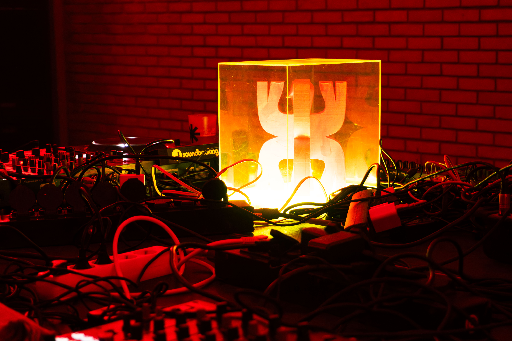

One of my most recent professional challenges was capturing the 4th edition of Porto Design Biennale, themed Time is Present. Designing the Common — a project with a real and lasting impact on communities. This selection is a small glimpse of what the Biennale was.


